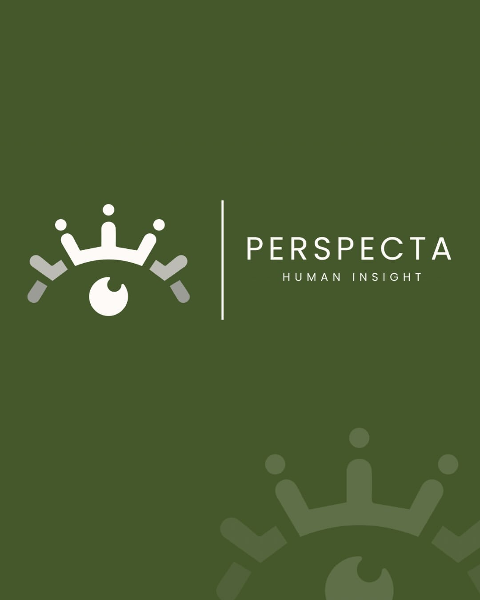

Aug 1, 2026
Inside the Refugee Camps Redefining Resilience
How grassroots leadership is transforming temporary settlements into self-sustaining communities.

Perspecta Human Insight creates opportunities for emerging thinkers to share ideas, examine complex issues, and develop practical solutions — while making knowledge and meaningful perspectives more accessible to broader communities.
One field among many we cover. Perspecta Human Insight is interdisciplinary by design — this piece models the "1000" format: a deeper analysis examining a problem, relevant evidence, and interpretation.
Human rights are the basic rights and freedoms that belong to every person in the world, from birth until death — regardless of nationality, sex, ethnicity, religion, or belief. They cannot be earned, bought, or inherited through status or privilege, and in principle, they cannot be taken away.
In 1948, the United Nations General Assembly adopted the Universal Declaration of Human Rights (UDHR), establishing that "all human beings are born free and equal in dignity and rights." Its thirty articles protect life, liberty, and security of person; freedom from discrimination and torture; freedom of expression, belief, and movement; and the right to education, work, and an adequate standard of living — a foundation that still shapes international law and advocacy today.
Source: Universal Declaration of Human Rights, United Nations General Assembly, 1948.
"What does the term 'human rights' evoke for you, personally?" — a question we posed to our community on Instagram.
"The term human rights evokes, for me, an understanding of something fundamental, a natural status of capability and opportunity that exists simply because we are human. It brings to mind the idea that there are certain rights that should not be conditional, granted, or earned through status, wealth, or privilege. Privilege can be given or taken away, but human rights are inherent, universal, and ideally untouchable."
— @perspectahumaninsight
"When I think about human rights, I think about a foundation for human dignity, something that cannot be negotiated or compromised without losing our sense of shared connection. It reminds me of the contrast between what the world often is and what it should be — a place where people's worth isn't determined by systems of power or hierarchy, but rather by the fact of their existence."
— @perspectahumaninsight
"Human rights, in this sense, reinforce the idea that each person has an equal claim to freedom, safety, and opportunity. Yet the term also carries tension, because while it represents an ideal, we live in systems that consistently fail to uphold it. So when I hear human rights, I do not only think of moral entitlement, but also of a shared responsibility to protect and affirm that entitlement for everyone."
— @perspectahumaninsight
Every idea moves through the same working model, published in one of three formats.
Short perspective pieces explaining what is happening and why it matters.
Deeper analysis examining a problem, relevant evidence, and interpretation.
Longer work centered on practical, feasible solutions.
Perspecta Human Insight is in its founding stage — the cards below are illustrative examples of the model, not a live archive.
How grassroots leadership is transforming temporary settlements into self-sustaining communities.
Communities are pairing ancient storytelling practices with new platforms to preserve endangered histories.
New field data on isolation in dense urban environments — and the small interventions reversing it.
What happens to decision-making, empathy, and accountability when algorithms take the wheel.
Tracing accountability gaps across three continents of manufacturing and sourcing.
As the global caregiving gap widens, who is left to carry the weight — and at what cost?
Linguists and communities race to document languages before the last fluent speakers are gone.
Inside the quiet expansion of behavioral data markets — and what it means for autonomy.
No reports match this filter yet — check back soon.
Mission — Perspecta Human Insight creates opportunities for emerging thinkers to share ideas, examine complex issues, and develop practical solutions while making knowledge and meaningful perspectives more accessible to broader communities.
Vision — A world where people from different backgrounds and disciplines have meaningful opportunities to contribute ideas, challenge assumptions, and help shape better futures.
To bridge research, lived experience, and innovation to develop strategies that strengthen people, organizations, and communities.
We collaborate across sectors to deliver evidence-based insights, build meaningful partnerships, and create practical solutions with lasting impact.
We believe human dignity, equity, and inclusion should shape every decision, ensuring development reflects the needs and aspirations of the people it serves.
Educational opportunity, fellowships, scholarships, research, mentorship, public education, and community programming.
A public-facing publication and media platform for perspective pieces, research explainers, interviews, short videos, and solutions.
A fellowship and contributor community for college students, graduate students, and young professionals.
A future, separate consulting LLC for research, strategy, and organizational development — kept legally and financially independent from the nonprofit.
For college students, graduate students, and young professionals ready to develop and share a thoughtful perspective or solution.
Where practical, initial review is as blind as possible, with final decisions made by an independent selection committee — not any one individual.
Reflections, definitions, and human-centered perspectives — straight from @perspectahumaninsight.
Perspecta Human Insight is at a stage where thoughtful participation can meaningfully shape what the organization becomes. Board members, contributors, advisors, and partners can help test the model, strengthen its governance, broaden its perspectives, and build the systems necessary for long-term credibility and impact.
The immediate question isn't who can add a name to the organization — it's who can help build something capable of creating opportunity, elevating ideas, and turning perspective into meaningful action.
Reach Out to the Founding Team